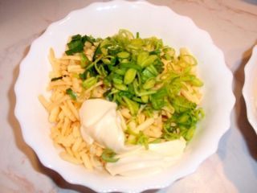
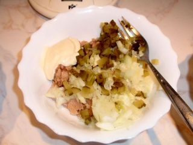
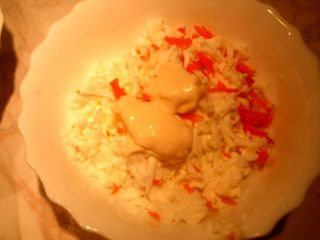
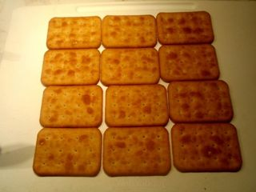
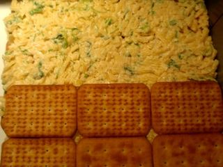
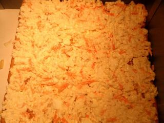
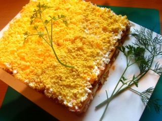

Шаг 1: Смешиваем сыр с луком.

Сыр натрите на средней или крупной терке. Лук-порей промойте и порежьте мелкими колечками.
В тарелке смешайте лук с сыром, добавьте немного майонеза и вновь как следует все перемешайте.
Отставьте пока в сторону, это будет заготовка для одного из слоев салата.
Шаг 2: Смешиваем тунец с огурцами.

С тунца слейте масло, немного разомните кусочки рыбы вилкой, но не в кашу, и выложите их в пустую тарелку.
Корнишоны промойте, нарежьте кубиками и добавьте к тунцу.
Очистите от шелухи репчатый лук, сполосните его и, так же мелко порезав, добавьте к огурцу.
Сдобрите все майонезом, поперчите если хотите и перемешайте. Отставьте в сторону.
Шаг 3: Смешиваем яичные белки и морковь.

Яйца отварите вкрутую (10-12 минут после закипания), охладите проточной водой и очистите от шелухи. Отделите белки от желтков, желтки пока отставьте в сторону, а белки натрите на средней терке.
Сырую морковь очистите от кожицы, промойте проточной водой и натрите в ту же тарелку, что и яичные белки.
Посолите все вместе, добавьте перца, заправьте майонезом и перемешайте.
Шаг 4: Собираем салат на крекерах.

На плоскую тарелку или на противень выложите 12 крекеров в три ряда.

Покройте их смесью из сыра и лука-порея, разровняйте, а сверху выложите следующий слой из крекеров.
Затем пойдет слой из тунца с огурцами и репчатым луком. Старайтесь наносить слои на крекеры равномерно, чтобы толщина везде была примерно одинаковая.

И вновь слой из дюжины крекеров, а после белки, смешанные с морковкой.

Для красоты посыпьте верх салата тертыми желтками, можно украсить все парочкой веточек свежей зелени.
После того, как вы соберете салат из крекеров, дайте ему настояться, если на улице и в доме жарко, то лучше убрать его в холодильник. Настаивать слоеный салат нужно для того, чтобы крекеры немного пропитались начинкой и размягчились.